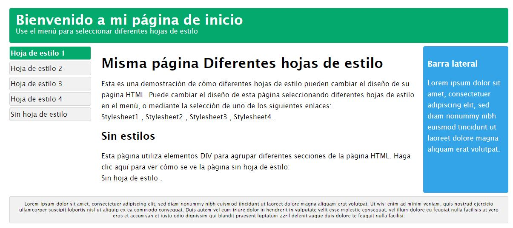
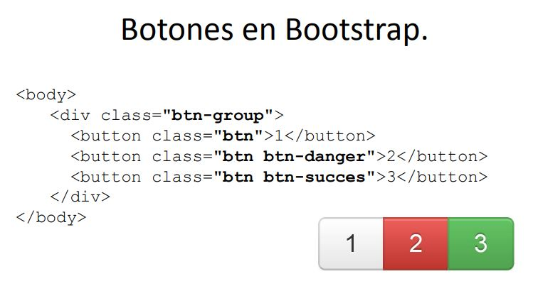

El propósito de este sitio web, es dar a conocer de manera pedagógica y dinamica sobre Hojas de Estilo en Cascada CSS, Frameworks CSS. D y como estos temas se relacionan con la creación y embellecimiento de las paginas web.
CSS

https://www.w3schools.com/css/css_syntax.asp
Las css o (coding style sheets) son hojas de estilo que definen la apariencia y presentación de las páginas web y lo más importante es que no se tiene que cambiar el contenido html.
Es un archivo que se realiza aparte del HTML con extensión css y se vincula mediante un script en el HTML
Durango, A. (2015). Diseño Web con CSS: 2ª Edición. IT Campus Academy.

https://www.w3schools.com/css/css_syntax.asp
FRAMEWORKS CSS

Los frameworks css son herramientas y pautas para desarrollar el estilo de una página web
Sustituyendo elementos predeterminados del navegador.
Entre sus usos mas comunes encontramos que ayuda al texto para que sea mas accesible en cualquier soporte. Además, podemos encontrar desplegables, grupos de botones, barras de navegación, migas de pan, etiquetas, barras de progreso.
Actualmente se encuentran varios FRAMEWORKS que nos facilitan nuestras actividades a la hora de realizar una pagina web responsiva y que se ajuste a los diferentes tamaños o diferentes dispositivos electrónicos como pantallas, tabletas o celulares.
Un ejemplo de un FRAMEWORKS es Bootstrap, donde con la ayuda del lenguaje de programación javascrip, podemos realizar diferentes cambios a nuestra pagina web. Ver imagen.

Yuste Torregrosa, Á., & Luján-Mora, S. (2013). iDESWEB: Frameworks CSS: Bootstrap. iDESWEB.